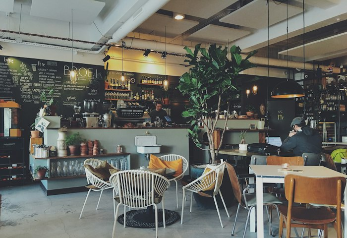
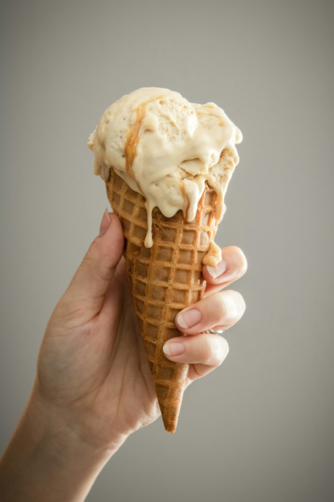
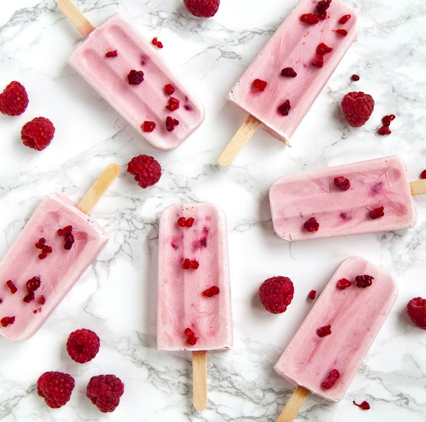
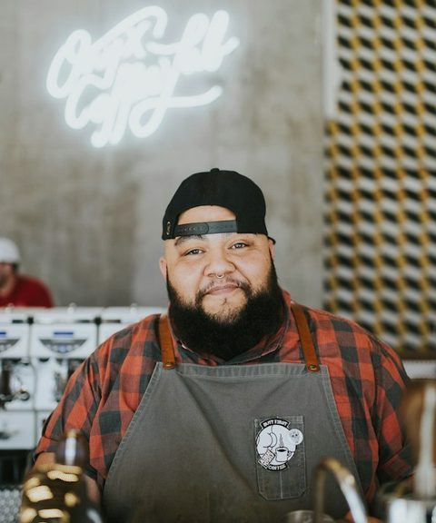
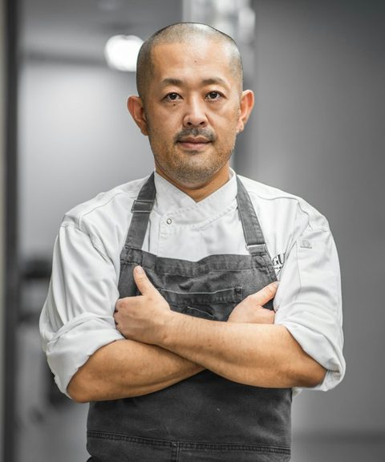
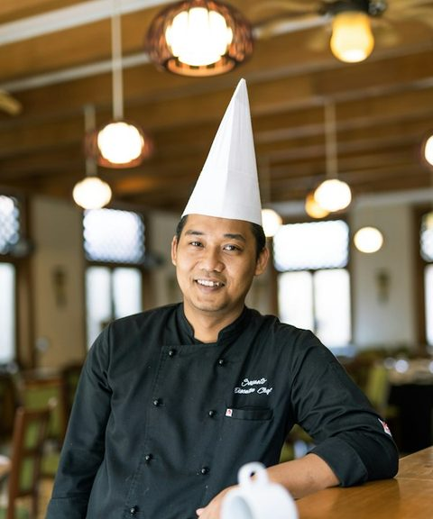

Isabella Moreno
Founder & Head Churner
Trained in Bologna and still at the churn by 6 AM most mornings. Isabella signs off every recipe before it earns a place in the dipping cabinet.
Signature scoop: Salted Butter Caramel
Scoop & Swirl began in 2014 with one hand-painted cart, a second-hand batch freezer and a single recipe for salted butter caramel. Today two neighbourhood parlours and a crew of 38 still churn every batch by hand, every morning.



Est. 2014Our founder, Isabella Moreno, trained as a pastry chef in Bologna before coming home to the coast with one simple belief: ice cream should taste of the ingredients it is made from, not of sugar and air. She spent her savings on a restored gelato cart and sold her first 40 scoops on the Sunset Beach Boardwalk in the summer of 2014.
Word travelled fast. Queues formed before the cart opened, local cafés asked for wholesale tubs, and three years later we signed the lease on our Downtown Flagship. We are still independent and family-run, and every new flavour is still taste-tested by our own crew first.
Every year brought a new chapter, a new flavour or a new reason to celebrate. These are the moments that shaped the parlour you know today.
A restored 1962 Italian gelato cart starts trading on the Sunset Beach Boardwalk with three flavours and a hand-cranked churn.
We move into 742 Evergreen Terrace, fire up our first cast-iron waffle irons and open a 45-seat lounge that stays busy until late.
Guests asked and we listened: a dedicated oat-milk gelato and sorbet station launches with its own scoops, wells and freezers.
The vintage cart goes back on wheels for weddings and company picnics. In that first season we served 84 events across the county.
The Sunset Beach parlour opens at 120 Ocean Promenade, just 200 steps from the spot where our very first cart was parked.
A dedicated test kitchen opens behind the Downtown Flagship, where around 30 trial batches a month compete for a spot in the cabinet.
A small team of pastry chefs, bakers and flavour obsessives who taste, tweak and churn every batch before our doors open.
Founder & Head Churner
Trained in Bologna and still at the churn by 6 AM most mornings. Isabella signs off every recipe before it earns a place in the dipping cabinet.
Signature scoop: Salted Butter Caramel

Flavour Lab Lead
A former chocolatier who runs our test kitchen, trialling around 30 batches a month to create two limited drops every season.
Signature scoop: Smoked Chili Chocolate Fudge

Pastry & Waffle Chef
Leads the bakery crew that presses 600 waffle cones a day, plus every brownie, churro and shortbread crumb folded into our scoops.
Signature treat: Warm Churro Swirl Sundae

Events & Catering Chef
Runs our vintage cart fleet and has scooped at more than 300 weddings, galas and school fairs since our catering service began in 2021.
Signature treat: Mini Milkshake Shooters
Good ice cream should leave a neighbourhood a little sweeter than it found it. These are the commitments we measure ourselves against every year.
Every Tuesday, 5% of parlour sales go to the Metropolis Youth Arts Fund. Since 2018 that has paid for 12 school music and art programmes.
Children who finish a library reading challenge earn a free cone. In 2025 we handed out 2,400 of them across nine partner libraries.
Broken waffle cones become crunchy toppings, fruit trimmings become sorbet syrups and everything else goes to a local compost farm.